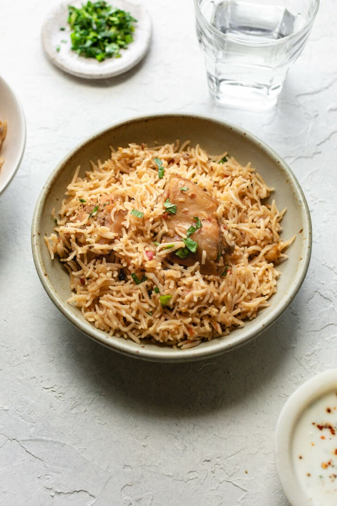

Update
This is a detailed recipe of authentic Pakistani Chicken Biryani that is very delicious and easy to make. No, you don't need tons of difficult-to-find spices or ready-made masala. This is chicken biryani that fills your house with a tempting biryani aroma.
I've gone crazy providing details of each step in this recipe. Please bear with me! Because this recipe is also made by non-desi people and I'm writing post assuming them. Desi people can consume this recipe through pictorials.